地政学
花蓮は台湾東岸の県都で、海岸線、鉄道、港、空港、山岳道路を束ねます。西部の大都市から山で隔てられるため、物流、医療、防災、観光の自立性が重いです。太平洋側の視点で台湾を読む入口になります。防災時にも重要です。
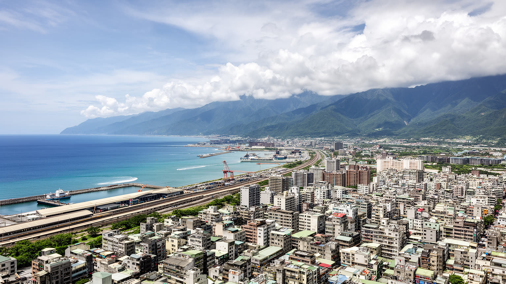
🇹🇼 台湾 / 花蓮県 / World City Atlas
台湾東部の海と山にはさまれた県都。太魯閣へ向かう玄関であり、港、鉄道、石材、先住民文化、夜市、地震と台風への備えが近い距離で重なる都市です。
都市の骨格
花蓮は中央山脈と太平洋の間に開いた細い市街地です。港、駅、県庁、学校、病院、夜市が近く、少し進むと渓谷、断崖、河口、先住民集落へつながります。
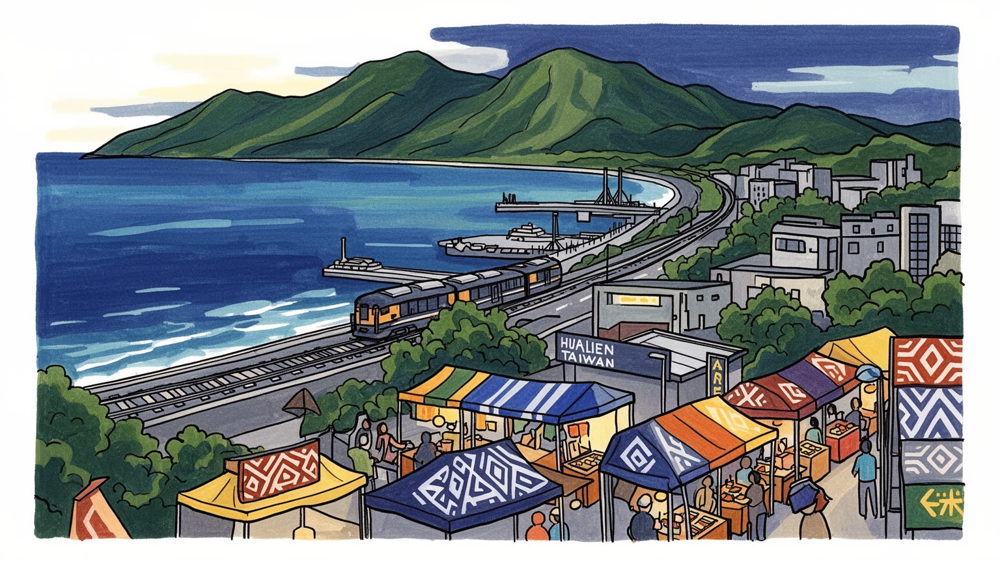
花蓮は台湾東岸の県都で、海岸線、鉄道、港、空港、山岳道路を束ねます。西部の大都市から山で隔てられるため、物流、医療、防災、観光の自立性が重いです。太平洋側の視点で台湾を読む入口になります。防災時にも重要です。
観光、宿泊、飲食、花蓮港の物流、石材加工、農産品、医療、行政が雇用を作ります。季節変動と災害による休業が大きく、若者の流出、低賃金、技能継承も課題です。港と渓谷の仕事が市街地を支えます。生活費も課題です。
アミ、タロコ、ブヌンなどの先住民文化、漢人移住の廟、教会、仏教施設、祭礼が近い距離で重なります。歌、織物、収穫祭、祖霊への感覚は観光資源である前に生活の記憶です。敬意ある理解が必要になります。対話も重要です。
旅行者は太魯閣、七星潭、東大門夜市へ向かうが、住民には地震、台風、道路寸断、医療アクセス、住宅費、観光混雑が日々の条件になります。美しい景観と脆い地形を同時に扱う生活都市です。静かな配慮も必要です。
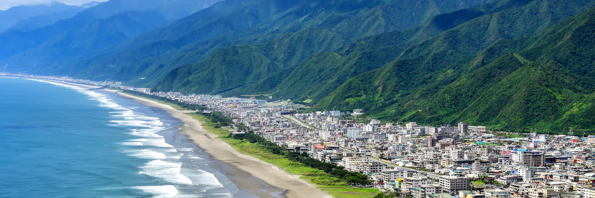
花蓮の都市形は、太平洋と中央山脈の間に残された細い平地によって決まります。西部台湾のように広い平野が続くのではなく、背後には急な山が立ち上がり、前面には海岸段丘と河口、港、防波堤があります。市街地の距離感は小さいが、周囲の地形は大きく、駅から少し移動するだけで山、渓谷、海辺、農村へ景色が変わります。この近さが花蓮の魅力であり、同時に不安定さでもあります。山から流れる川は豪雨で急に表情を変え、海岸道路や鉄道は崩落や高波に弱いです。港と空港、鉄道駅がそろうのは便利さだけでなく、孤立を避けるための複数の回路を必要とする土地だからです。花蓮を読む時は、観光写真の青い海だけでなく、山が都市を圧縮し、移動の選択肢を限り、災害時の避難と補給を難しくする構造を見る必要があります。河川沿いの集落、海岸の集落、駅前の商業地は近くに見えても、それぞれ違う危険と生活リズムを抱えます。朝市へ行く道、学校へ向かう橋、港へ入る大型車、山へ向かう観光バスが同じ狭い地形を使うため、都市計画は常に交通と防災の調整になります。平地が限られるからこそ、公共施設や住宅地の配置、緑地の残し方、避難路の確保は都市の将来を左右します。山へ近い便利さと、海へ近い開放感を同時に得る代わりに、住民は常に水と斜面の変化を読んで暮らしています。美しい地形は、住民にとって毎日の暮らしの条件でもあります。
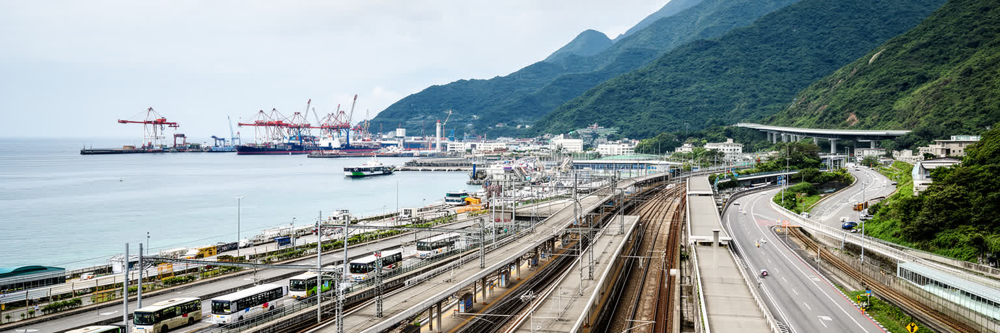
花蓮の交通は、単なる観光アクセスではなく東台湾の生活線です。台北方面からの鉄道は、通学、通院、帰省、出張、旅行をまとめて受け止め、駅前には宿泊、レンタカー、バス、タクシー、飲食店が集まります。花蓮港は砂利、石材、セメント、物資輸送、クルーズ寄港を担い、空港は遠隔地としての補助的な回路になります。ですが、山と海にはさまれた東岸では、一本の道路や鉄道が止まるだけで移動の不安が一気に増します。地震、落石、台風、高波は、通勤だけでなく物流、救急、観光予約、農産品出荷を揺らします。便利な駅前の風景の背後には、線路保守、道路監視、港湾作業、バス運転、宿泊業の調整があります。都市の小ささは移動を楽にするが、県全体を見れば病院や学校へ向かう距離は長く、山間部や海岸部から市街地へ出る負担も大きいです。観光客の列車到着時刻に合わせてバスや送迎車が動き、地元の通勤や通学と交差します。駅前再開発や道路整備は観光の便利さを高めるが、地元の高齢者が病院へ行けるか、学生が安全に通えるか、災害時に物資を運べるかまで含めて評価される必要があります。港と駅と病院を結ぶ短い距離が、平時にも非常時にも都市の生命線になります。花蓮の都市力は大規模な高層街区よりも、限られた回廊をどれだけ粘り強く動かせるかに表れます。東岸をつなぐ交通は、地図上の線ではなく、暮らしを孤立させないための社会基盤です。
花蓮は太魯閣へ向かう玄関として知られるが、その役割は観光客を送り込むだけではありません。大理石の峡谷、断崖、トンネル、吊橋、山地集落は圧倒的な景観を持つ一方、落石、地震、豪雨、道路閉鎖の危険も抱えます。市街地のホテル、旅行会社、運転手、飲食店、土産物店は、渓谷の人気に支えられるが、災害や入園制限があれば収入は急に落ちります。観光の安全は、案内板や写真映えよりも、道路情報、避難判断、ガイドの訓練、保険、自然への敬意によって決まります。太魯閣は先住民の土地の記憶とも結びつき、景色を消費するだけでは理解できません。花蓮の観光都市としての成熟は、渓谷をどれだけ多く売るかではなく、危険な地形と文化的な背景を正しく伝え、自然の回復時間を尊重できるかで測られます。渓谷観光の収益は市街地の宿泊や飲食を支えますが、混雑時の交通、救急対応、ガイドの労働条件、地域住民の静けさも同時に問われます。旅程が短いほど名所だけを急ぎがちですが、山地の道は速度を許さないです。入園前の説明、天候悪化時の中止判断、地域の文化に触れる時の態度は、花蓮での旅の質を大きく変えます。安全に止まる判断を観光の失敗と見なさないことが、渓谷を長く楽しむための条件になります。ガイドと運転手の経験を尊重することも、旅人側の責任です。玄関都市である花蓮には、旅の始まりに安全と敬意を整える責任があります。
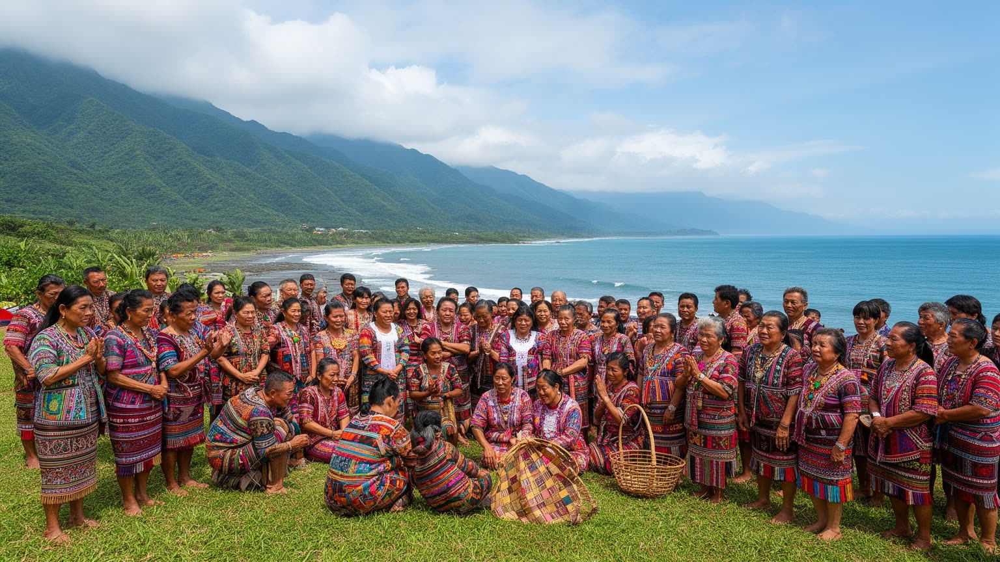
花蓮を読むうえで、先住民文化は周辺的な装飾ではありません。アミ、タロコ、ブヌン、サキザヤ、クバランなど、東部に根を持つ人々の歌、踊り、織物、狩猟や漁労の記憶、収穫祭、祖霊への感覚は、都市の時間を深く形作っています。市街地の学校、教会、行政、観光施設、飲食店には、山村や海岸集落との行き来があり、若者は都市で働きながら故郷の祭礼へ戻ることも多いです。一方で、文化は観光向けの舞台にされやすく、衣装や歌だけが切り取られる危険があります。土地権、言語教育、就業、災害復旧、観光収益の配分を見なければ、文化への敬意は表面的になります。市街地の店やイベントで先住民文化に触れる時も、それが誰の企画で、誰に収益が戻り、どのような説明が添えられているかは重要です。言語や名前を正しく扱うこと、祭礼を撮影対象だけにしないことも都市の礼儀になります。都市で暮らす若者にとって、文化は故郷へ戻るものでもあり、新しい表現や仕事として作り直すものでもあります。学校教育、音楽、クラフト、ガイド業、飲食は、伝統を固定せず更新する場になります。花蓮の多文化性は、民族名を並べることではなく、誰が土地を語り、誰が儀礼を続け、誰が都市経済から利益を得るのかを問うことで見えてきます。山と海の景観は、誰かの生活史でもあります。その前提を持つと、花蓮の旅はより深い対話になります。
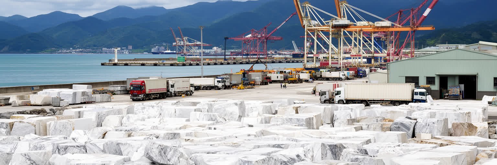
花蓮の産業を語る時、石材と港湾は欠かせません。周辺の山地から採れる大理石や石灰石は、道路の舗装、建材、工芸、景観の印象にまで影響し、花蓮には石の街というイメージが残ります。加工場、運搬トラック、港湾倉庫、セメント関連の仕事は、観光だけではありません東部経済の実務を担ってきました。ですが、採石と加工は環境負荷、粉じん、山地の景観、労働安全、交通の問題を伴います。港湾も同じで、物資を運ぶ力は地域を支える一方、騒音や大型車の動線を市街地へ持ち込みます。花蓮の経済は、自然を見せる観光と、自然資源を掘り出して運ぶ産業が同じ土地で並ぶ点に特徴があります。この二つを分けて語ると、都市の矛盾は見えません。さらに石材産業には、熟練した加工、運転、保守、品質管理、販売の技能が必要で、単なる資源採取では終わらない地域の仕事があります。若い世代が継ぐか、観光サービスへ移るかによって、産業の姿も変わります。石を使った公共空間や工芸は都市の個性を作りますが、採掘地や工場の負担を見えなくすることもあります。地域経済を考えるなら、港から出ていく貨物と、街に残る粉じんや道路負荷の両方を同じ表で見る必要があります。観光客が見る石の美しさと、働く人が扱う石の重さは切り離せません。石の産業を持続させるには、資源の管理、労働者の安全、環境監視、観光地としての景観保全を同時に考える必要があります。港は美しい海の端にある、重い現場でもあります。
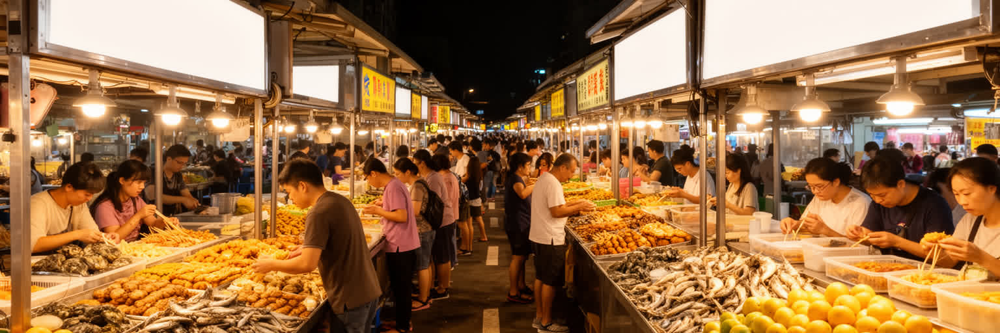
花蓮の食は、観光客向けの名物と住民の夕食が同じ通りで重なります。東大門夜市では、串焼き、海産物、原住民料理を意識した料理、果物、甘味、台湾式の小吃が並び、旅行者は海風の中で東部の夜を味わいます。ですが、夜市は単なる娯楽ではありません。屋台の仕込み、仕入れ、清掃、家族経営、若いアルバイト、駐車と歩行者動線、騒音、ごみ処理が毎日積み重なって成り立ちます。観光客が増えるほど収入は伸びるが、価格や店の構成が旅行者向けに偏り、地元の人が使いにくくなることもあります。花蓮の食文化の厚みは、市場、港の魚、山地の農産品、先住民の食の記憶、台鉄弁当のような移動の食まで含めて見えてきます。小さな食堂や朝市では、通勤前の朝食、学校帰りの軽食、家族の持ち帰りが観光とは別の時間で動きます。地域の味を守るには、店主が休めること、材料を仕入れ続けられること、若い働き手が残れることも欠かせません。先住民料理を名乗る店では、食材や調理法の由来を丁寧に伝える姿勢も問われます。港や農村から届く食材があるからこそ、花蓮の夜市は海と山の近さを皿の上で示します。夜市で働く人の多くは翌朝の仕入れや片付けも担い、都市の夜を長く支えています。食べ歩きは楽しいが、その背後にある労働と土地のつながりを意識すると、都市の見え方は変わります。夜市の明かりは、旅の消費と住民の生活を同時に照らしています。
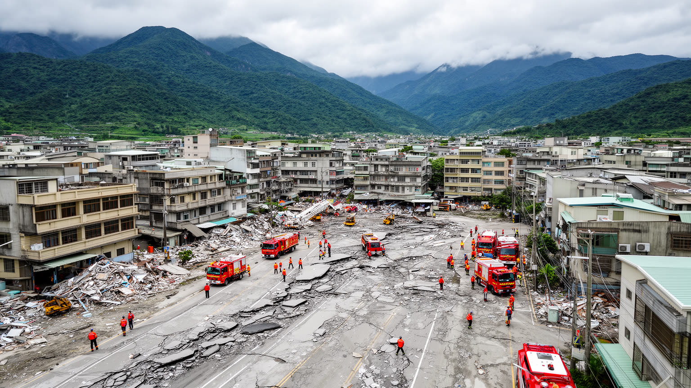
花蓮は台湾の中でも地震を強く意識する地域です。フィリピン海プレートとユーラシアプレートがぶつかる東部では、揺れ、断層、山崩れ、落石、道路寸断、建物被害が都市の記憶に残ります。住民にとって防災は年に一度の訓練ではなく、家具の固定、避難経路、連絡手段、学校や病院の耐震、観光客への情報提供まで含む日常の準備です。観光都市では、来訪者が土地の危険を知らないまま渓谷や海岸へ向かうため、多言語情報と迅速な交通判断が重要になります。地震の後には、住宅修繕、宿泊キャンセル、道路復旧、商店の売上減、心の負担が長く残ります。災害復旧では、行政、軍、消防、医療、宿泊業、交通事業者、地域ボランティアが同時に動き、孤立集落への支援も課題になります。古い建物を補強する費用や、営業再開までの資金繰りは、観光地の華やかさからは見えにくいです。災害時には、外国人旅行者、高齢者、障害のある人、山間部の住民へ情報が届くかも問われます。通信、避難所、交通再開、医療搬送がつながって初めて、都市は安心を取り戻します。花蓮の強さは、災害がないことではなく、被害を受けても生活と観光と交通を少しずつ戻す力にあります。美しい渓谷や海辺を楽しむほど、その地形が動き続ける場所であることを忘れてはなりません。防災は都市の魅力を損なう説明ではなく、花蓮で暮らし旅するための基礎です。
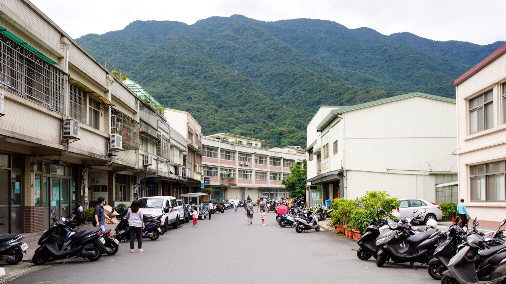
花蓮市の暮らしは、規模の小ささによる近さと、東部ならではの制約が同居します。県庁、学校、病院、商店街、駅、夜市、海岸が比較的近く、車やスクーター、自転車で生活が回りやすいです。一方で、専門医療や高等教育、特定の仕事を求めると西部や台北へ出る必要があり、若者の流出や高齢化が進みます。観光地としての人気は宿泊や飲食の仕事を生むが、繁忙期と閑散期の差が大きく、安定した賃金を得にくい人もいます。住宅は大都市より広く見えても、地震リスク、古い建物の耐震、交通の便、家族の介護、観光による地価の変化が選択を左右します。花蓮の日常は、観光ポスターの開放感だけでは説明できません。小さな都市であるほど、学校、病院、商店、公共交通の一つひとつが生活の安心に直結します。夜に開く飲食店、朝の市場、放課後の塾、病院へ向かう家族、港や工場の勤務者が、観光客とは違う時間で市街地を使います。歩道の日陰や雨の日の移動、地域医療の維持は、都市の規模に関係なく重要です。人口が減るほど、商店やバス路線、学校の維持は難しくなり、便利な中心部と周辺集落の差も広がります。移住者や長期滞在者が増える場合も、地域の関係にどう入るかが生活の質を左右します。住み続けられる花蓮を考えるには、旅人の満足だけでなく、若い世帯と高齢者が頼れる都市機能を保つことが必要になります。
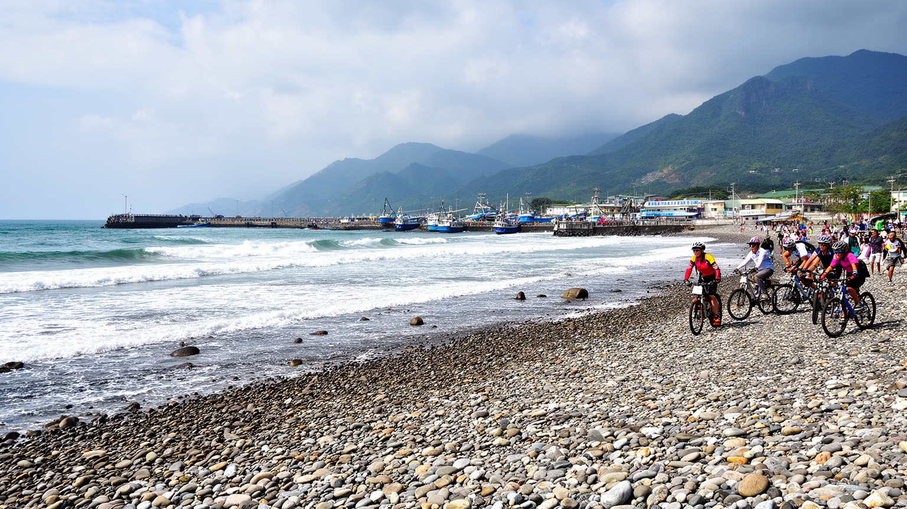
花蓮観光の魅力は、渓谷だけでなく太平洋に面した海岸にもあります。七星潭の石浜、港の防波堤、海沿いの自転車道、朝の空、漁港の匂いは、都市を開放的に見せます。旅行者は海を眺め、写真を撮り、夜市へ戻るが、海岸は住民にとって散歩、釣り、通勤、漁業、休息、防災の場所でもあります。観光客が増えると、駐車、騒音、ごみ、短時間滞在、民宿化、海岸保全の問題が生まれます。海は静かな背景ではなく、台風、高波、漂着物、侵食を運ぶ力でもあります。花蓮の観光を持続させるには、人気スポットへ人を集中させるだけでなく、歩行者空間、公共トイレ、ごみ管理、地域の交通、漁業との調整を整える必要があります。海岸での安全情報が不足すれば、旅行者は波の強さや立入禁止の意味を理解しにくいです。写真を撮る場所を整えるだけでなく、地元の人が朝夕に使える静かな余白を残すことも大切です。宿泊やレンタカーの増加は便利さを作りますが、細い道路の混雑や住宅地の騒音も生みます。海岸観光は、滞在時間を伸ばす経済政策であると同時に、生活道路と自然環境をどう守るかという地域政策でもあります。短い滞在でも、海へ入らない判断やごみを残さない行動が地域の負担を軽くします。海岸の美しさは、誰かが毎日掃除し、危険を知らせ、土地の使い方を調整しているから保たれます。旅人が海を楽しむ時、その場所が住民の生活空間であることを忘れない姿勢が、花蓮の観光の質を支えます。
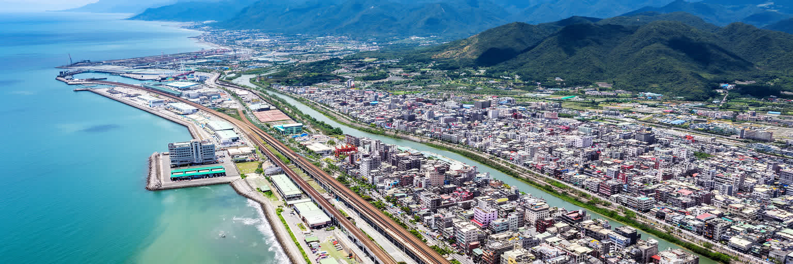
花蓮は人口規模だけで測れば小さな都市ですが、台湾を別の角度から読むための重要な中心です。西部の高密度な工業都市や台北の行政金融とは違い、ここでは海、山、港、鉄道、先住民文化、石材、観光、防災が同じ狭い平地で重なります。太魯閣や七星潭の美しさは、花蓮を強く印象づけるが、その背後には落石、地震、台風、道路寸断、若者の流出、観光依存、医療アクセスという現実があります。都市の価値は、巨大なGDPや高層ビルではなく、脆い地形の上で地域をつなぎ、文化を守り、旅人を受け入れ、災害から立ち直る力に表れます。花蓮を読むことは、台湾の東側にある生活の厚みを読むことです。港の仕事、駅前の宿、夜市の屋台、山村の祭礼、海岸の散歩、防災無線が一つの都市像を作ります。西部中心の地図では周縁に見える場所が、東岸の人々にとっては行政、医療、教育、物流、観光の中心になります。外から訪れる人は、花蓮を自然の入口としてだけでなく、山と海の間で社会を維持する都市として見る必要があります。都市の規模が小さいからこそ、一つの災害、一つの道路閉鎖、一つの病院機能、一つの祭礼が地域全体へ強く響きます。花蓮の読み方は、中心と周辺を反転させ、脆い場所にこそ都市の知恵が集まることを教えます。小さな県都が持つこの複合性を見れば、花蓮は観光地ではなく、東台湾の社会を支える結節点として見えてきます。